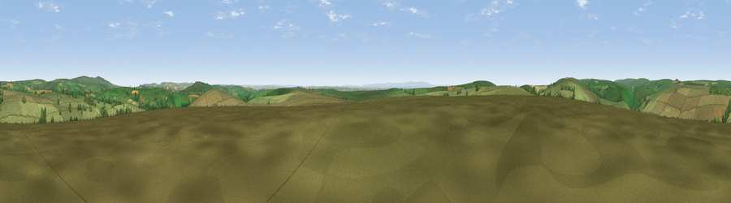

Withypool Common
#12772 in England · top 23% of its area beats it · near WithypoolThe view, rendered

A 360° render of this exact spot computed from the terrain model, tree cover and land cover — summer colours, afternoon light, calibrated against photographs of famous viewpoints. Real trees, hedges and buildings will differ in detail.
The panorama
Grey silhouette: terrain skyline in each direction (720 bearings, Earth curvature and refraction included). Dashed green: skyline with trees (+15 m) and buildings (+8 m) as obstacles. Blue strip: how far the ground is visible on each bearing.
Where the view opens
Wedge length = distance to the farthest visible ground on that bearing (vegetation-aware). Rings at 10, 25 and 50 km.
What fills the view
94% grassland · 5% woodland ·
Angular shares of the visible panorama (visual magnitude), not map area. Landscape diversity 0.11 (0–1 Shannon).
Key numbers
More beautiful places nearby
The staircase of upgrades: each row has a higher view potential than everything closer. Driving times are estimates from straight-line distance, calibrated against real road routing — check an actual route before setting out.
| Place | Direction | Drive | Score |
|---|---|---|---|
| Viewpoint near Simonsbath | W · 3 km | ~7 min | 64.8 |
| Viewpoint near Twitchen | SW · 5 km | ~11 min | 69.1 |
| Viewpoint near Simonsbath | W · 7 km | ~15 min | 73.1 |
| Viewpoint near Brayford | W · 9 km | ~18 min | 74.1 |
| Viewpoint near Exford | NE · 9 km | ~18 min | 77.1 |
| Viewpoint near Luccombe | NE · 10 km | ~19 min | 84.5 |
| Viewpoint near Porlock | NNE · 12 km | ~22 min | 86.3 |
| Viewpoint near Oare | N · 13 km | ~24 min | 88.1 |
51.10283, -3.68918 · source: osm peak · position refined by local search. Computed location — check access rights before visiting.